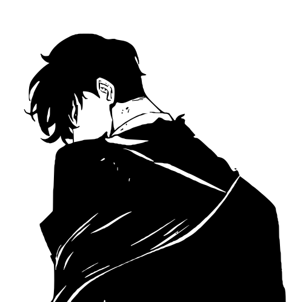

Your collection, organized.
Browse songs, albums, artists, and genres. Search and sort your library, save favorites, and revisit your most played tracks.
A home for your local music
The albums you love. The playlists you make. A private, native player that brings your collection together on Windows and Linux.
Free & open source. Listen offline.
Loading public GitHub statistics…
Everything you need to enjoy the collection on your device.
Browse songs, albums, artists, and genres. Search and sort your library, save favorites, and revisit your most played tracks.
Create playlists, keep duplicate tracks, and reorder entries. Play a song next, shuffle the queue, or put a favorite on repeat.
Read local lyrics, follow synchronized lines, and select a line to seek. Matching .lrc files and embedded lyrics are supported.
Add folders and scan incrementally. Optional folder watching picks up changes, and relocation preserves matching track records.
Your queue and position are saved. Reopening restores playback paused. Optional ReplayGain balances track levels with peak limiting.
Choose light or dark, an accent color, and artwork visibility. Use fullscreen playback, keyboard shortcuts, and desktop media controls.
Your desktop player operates offline. Your library stays on your device.
Add a music folder and start listening. No sign-in or subscription is required.
No uploads, cloud sync, online metadata lookups, or automatic update checks.
Music and lyric files are never edited or deleted. Folder removal and resets affect app records.
Windows media controls and Linux MPRIS bring playback to your desktop. Lyrics and artwork come from your local files.
Support depends on the codec. WMA and Opus are unsupported.
Get to know the player ›
Built by Tremors for a personal music collection. Contributions, bug reports, and feature requests are welcome on GitHub.
The native application uses Rust and GPUI. Architecture, setup, builds, and testing live in the developer documentation.
Thanks to the maintainers of Rust, GPUI Kit and GPUI, SQLite and Rusqlite, Rodio, Symphonia, CPAL, Lofty, Notify, Souvlaki, and Serde.
Each dependency retains its own license. Matching source downloads include dependency sources and notices. Third-party details ›
Built with HTML, CSS, JavaScript, system fonts, and Tremors Music's branding. Public release information and statistics come from GitHub.
No. Playback, scanning, lyrics, and library management operate locally. There are no accounts, streaming services, or online metadata lookups. This website separately reads public release information from GitHub.
MP3, FLAC, PCM WAV, Ogg Vorbis, AAC/ADTS, and M4A containing AAC or ALAC. Support depends on the codec inside the file. WMA and Opus are unsupported.
Embedded plain lyrics, timed LRC, and millisecond ID3 SYLT are supported. A matching local UTF-8 .lrc file takes precedence. The app does not download lyrics.
No. Folder removal and library resets affect app records. Your music and lyric files stay untouched.
Windows x64 requires Windows 10 version 1903 or newer, or Windows 11. Linux uses native builds and requires compatible Vulkan graphics, audio, and font libraries. See the developer guide for setup.
Yes. It uses GNU GPL v3 only. You can use, study, improve, and share it under the license. See the license and issue tracker.
Tremors Music for Windows and Linux.
Free, open source, and made for your local collection.